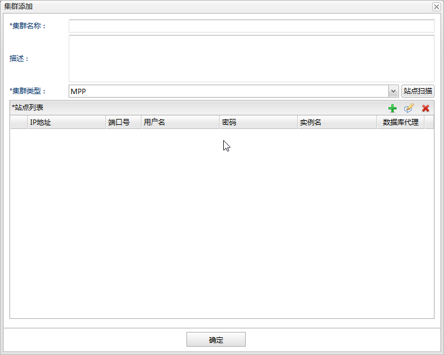
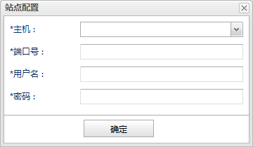
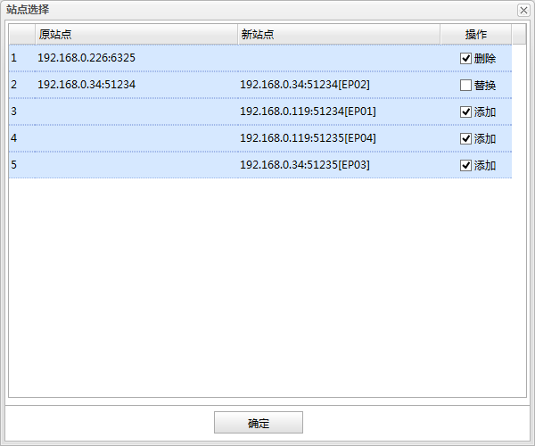

添加：点击表格右上角添加按钮，打开站点配置对话框，完成站点信息配置后点击确定按钮添加到该列表中。
添加：点击表格右上角添加按钮，打开站点配置对话框，完成站点信息配置后点击确定按钮添加到该列表中。
 编辑：选中一个站点，点击表格右上角编辑按钮，打开站点配置对话框，修改站点信息后点击确定按钮完成修改。
编辑：选中一个站点，点击表格右上角编辑按钮，打开站点配置对话框，修改站点信息后点击确定按钮完成修改。
 删除：选中需要删除的站点点击表格右上角删除按钮。
删除：选中需要删除的站点点击表格右上角删除按钮。
如果想对数据库集群进行监控，可以在数据库监控面板的添加按钮下拉菜单中选择集群，打开集群添加对话框进行添加。集群站点的添加有两种方式：一是站点扫描，指定一个站点自动扫描出所有站点；二是手动添加所有站点。如下图所示:

集群名称
集群监控的名称。
描述
描述信息。
集群类型
集群的类型。（目前支持MPP、数据守护DW、读写分离RW、自定义OTHER）
站点扫描
站点自动扫描。 点击打开站点配置对话框，指定一个集群中的站点，注意如果是存在主备关系的集群指定的站点必须是主机，点击确定后会自动扫描出集群中的所有站点并弹出站点选择对话框；
站点列表
集群的站点列表。

主机
数据库连接的主机地址。这是一个下拉列表，只能选择下拉列表中的主机地址（即已经启动数据库代理的主机）。也可以在输入框中输入字符串过滤下拉列表快速查找到主机地址。如图所示：

端口号
数据库连接的端口号。
用户名
数据库连接的用户名。
密码
数据库连接的密码。

站点选择列表
| 字段 | 说明 |
|---|---|
| 原站点 |
原有的站点。 |
| 新站点 | 新扫描出来的站点。 |
| 操作 | 操作有以下三种： 添加：勾选表示添加新扫描出来的站点；不勾选表示忽略新扫描出来的站点。 替换：勾选表示用新扫描出来的站点替换原有站点；不勾选表示使用原有站点。 删除：勾选表示删除原有站点；不勾选表示保留原有站点。 |